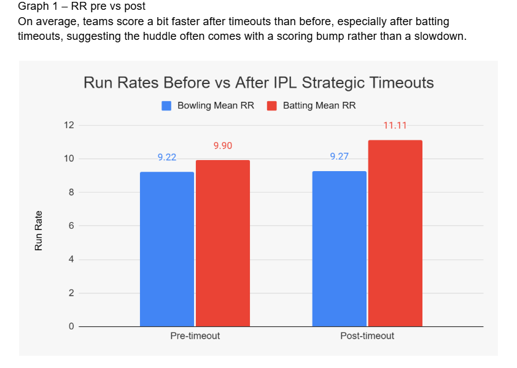
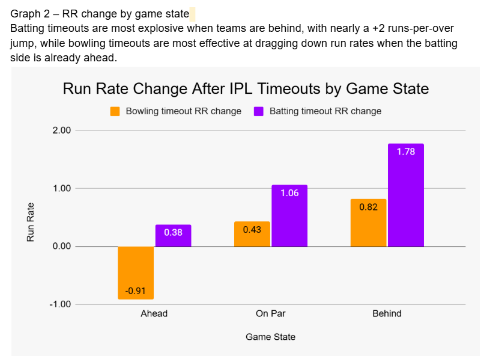
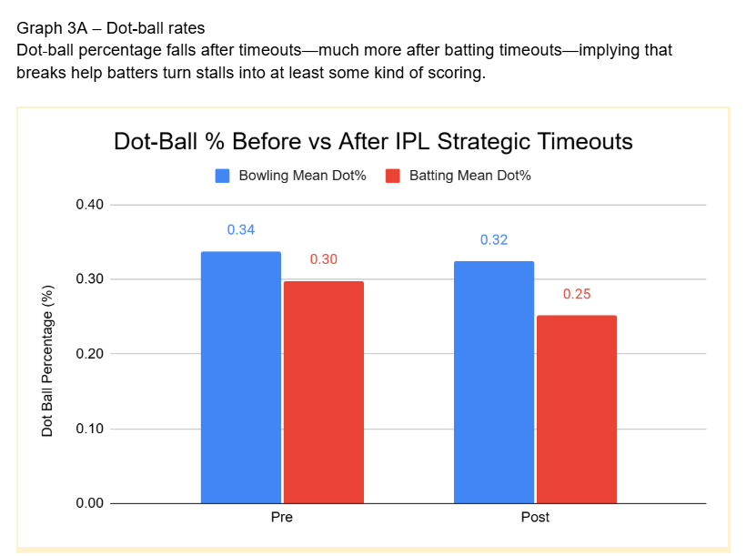
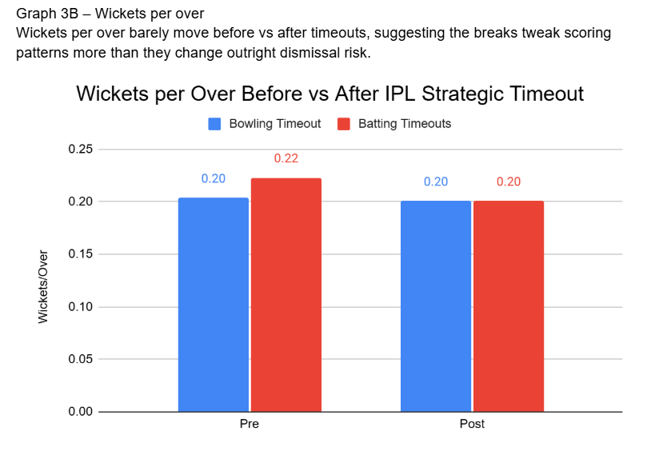
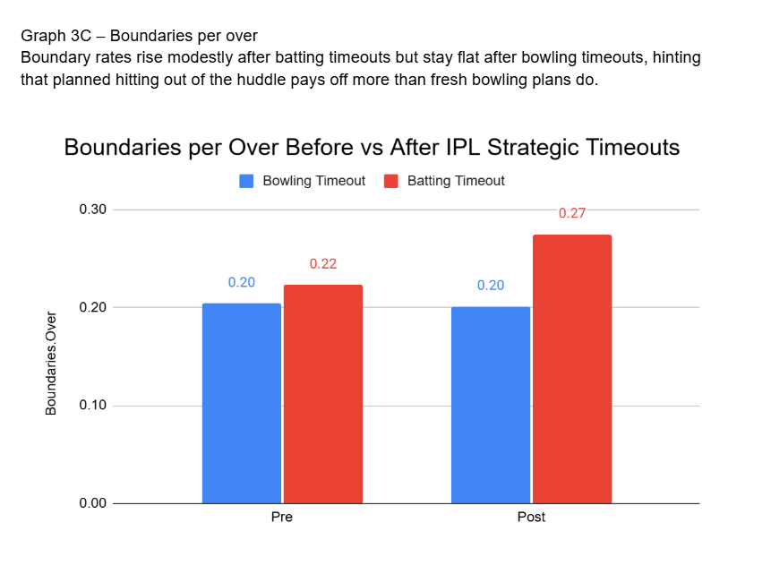

Are IPL Strategic Breaks Helping Captains or Just Killing Momentum?
By Ritvik Chemudugunta | June 11, 2026

Every IPL fan knows the feeling: your team is flying, the broadcasters flash “Strategic Timeout,” and three minutes later the innings feels completely different. Are these breaks actually helping captains sharpen plans, or are they just killing momentum for the sake of ads? Using ball‑by‑ball data from the 2025 season, I tracked what happens to run rates (how fast teams score every six balls), dot balls, wickets, and boundaries in the overs immediately before and after both batting and bowling timeouts to see whether the huddle really changes anything.
If Timeouts Kill Momentum, Why Does the Run Rate Often Go Up?
When you look at the simplest question—how fast teams score—timeouts mostly look like an accelerator, not a brake. On average, teams score a bit faster after the break than before, especially after batting timeouts where the dressing‑room plan often seems to unlock a scoring bump rather than a slowdown. The effect after bowling timeouts is smaller and more mixed, hinting that fresh fields and plans don’t consistently drag the rate down once batters have already set themselves.

This first graph sets the baseline: the story of timeouts is not “everything dies after the break,” but “the scoring pattern changes in more specific ways depending on who’s ahead and what teams try to do next.”
Who Really Owns the Timeout: The Team Ahead or the One Chasing?
To get past averages, I split timeouts by game state—whether the batting side was ahead of par, roughly on target, or behind when the break was taken. Batting timeouts were most explosive when teams were behind, with nearly a two‑runs‑per‑over jump in the next phase; bowling timeouts worked best as a damage‑control tool when the batting side was already ahead, trimming their run rate instead of letting the game completely slip away.

This second graph shows that the same rule can be used in opposite ways: for struggling batters, the timeout functions as a reset button, while for bowlers under the pump it’s a chance to break rhythm and squeeze the scoring just enough to keep hope alive.
Are Timeouts Ending Batting Stalls—Or Creating New Ones?
The clearest change after timeouts shows up in dot‑ball rates. Bowling timeouts tend to push dots slightly up, suggesting that refreshed fields and tighter plans help bowlers win a few more stand‑offs ball by ball. Batting timeouts show the opposite pattern: dot‑ball percentage drops, implying that teams use the break to find ways to turn stalls into at least some kind of scoring—singles, twos, or planned boundary options.

This makes intuitive sense: coaches rarely tell set batters to “do nothing” after a huddle; instead, they focus on rotation options and specific bowlers to target, which shows up as fewer completely wasted deliveries.
If Everyone Swings Harder After a Timeout, Where Are the Extra Wickets?
One common fan worry is that timeouts make batters over‑aggressive, leading to clumps of wickets as soon as play resumes. The data doesn’t really back that up: wickets per over barely move before vs after timeouts, for both batting and bowling breaks. That suggests the main impact of the timeout is on scoring patterns and tempo, not on outright dismissal risk; teams may change how they score, but they’re not suddenly throwing their wickets away in bulk.

In other words, a timeout might flip the feel of an innings without changing the basic survival odds for the batter at the crease.
Are Boundaries Out of the Huddle Planned Explosions or Just Coincidence?
The last piece of the puzzle is boundaries. Here, batting timeouts again stand out: boundary rates rise modestly after these breaks, especially when teams are behind the game and need a mini‑surge to get back to par. Bowling timeouts, by contrast, leave boundary rates mostly flat, which fits the idea that it is easier to script two or three “go” overs for your hitters than it is to suddenly discover a magic ball that shuts them down.

Put together, the dots, wickets, and boundaries show a consistent pattern: timeouts fine‑tune how runs arrive more than they transform the basic risk‑reward equation.
If the Break Isn’t the Villain, Is It Actually the Sharpest Weapon Captains Have?
Across a full season, IPL strategic timeouts look less like pure momentum killers and more like context‑dependent tools. When used well, especially by chasing teams that are behind, they create controlled aggression: fewer dots, slightly more boundaries, and a noticeable run‑rate bump without a spike in wickets. When used poorly, like calling a batting timeout while already ahead and then going too conservative, they can still stall a hot innings, but those cases are the exception, not the rule. For captains and analysts, the lesson is clear: the break itself isn’t the villain or the hero; it’s what you choose to change in those three minutes that decides whether the timeout sparks a comeback or just gives everyone time to complain on the couch.